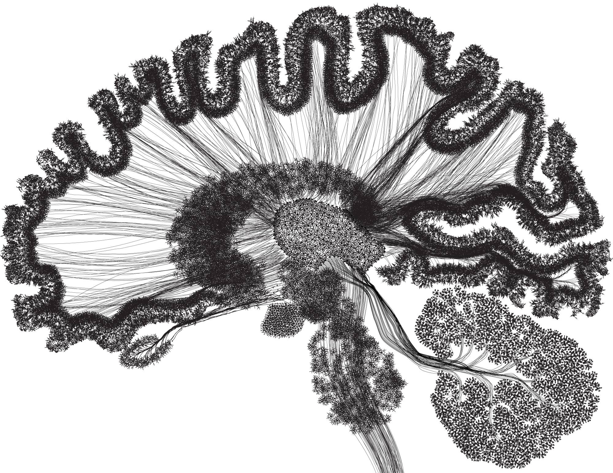

Algoritmos generativos en la creación de imágen y movimiento
Axiones: Diseño de particulas de origen y objetivo
Flow Fields: Enfoque generativo para la segmentación de alturas de terrenos
Attractor and Repeller: Programación Orientada a Objetos con formación y coheción para evadir obstáculos
Agentes Autonomos: Morfologías y conexiones cerebrales en todas las etapas del crecimiento
